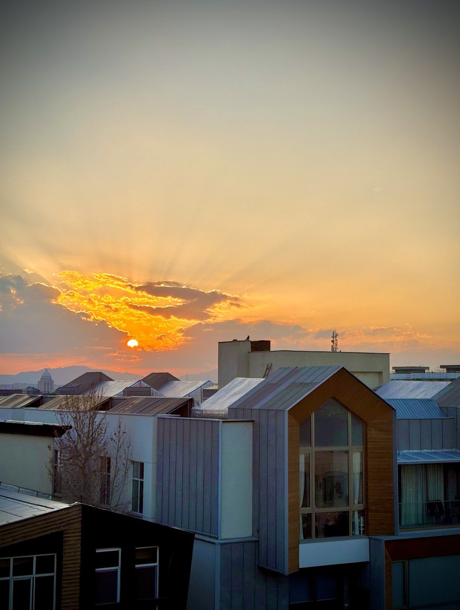
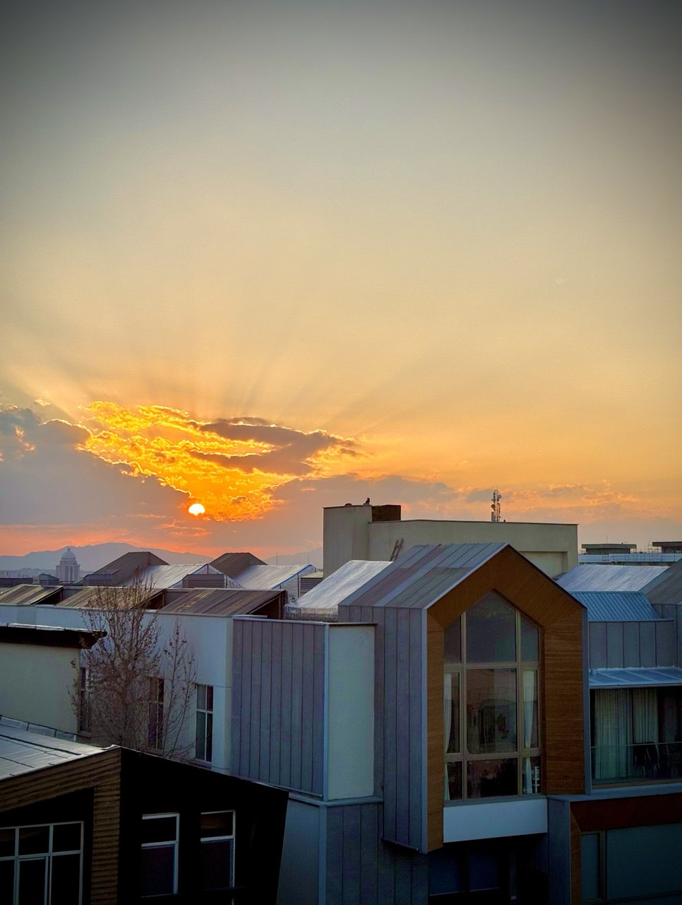

راهنمای جامع برای مالکان و سازندگان در منطقه مهرشهر
مشارکت در ساخت و ساز در مهر شهر
مشارکت در ساخت در مهرشهر، فرصتیست که میتواند سودی دوطرفه برای مالک و سازنده به همراه داشته باشد، اما اگر بدون آگاهی وارد این فرآیند شوید، ممکن است به مشکلات حقوقی، مالی یا حتی تخریب سرمایه برسید. در این صفحه، با نگاهی محلی، تخصصی و کاربردی، نکات طلایی این نوع همکاری را بررسی میکنیم. درک دقیق از قوانین شهرداری مهرشهر، قیمت زمین و ضوابط ساختوساز، نقش کلیدی در موفقیت این مشارکت دارد. همچنین انتخاب یک سازندهی معتبر و تنظیم قرارداد شفاف، میتواند امنیت سرمایه و آرامش خاطر طرفین را تضمین کند.
ارزش ملک
تحلیل دقیق، منصفانهسازنده حرفهای
رزومه معتبر، تیم تخصصیقرارداد شفاف
مستند، قابل پیگیری 


شناخت ارزش زمین؛ پایهی هر مشارکت منصفانه
قبل از مذاکره با هر سازندهای، باید بدانید ملکتان چقدر میارزد. در مهرشهر، عواملی مانند:انتخاب سازنده؛ تجربه مهمتر از اسم و برند است
در مهرشهر، افراد زیادی تحت عنوان «سازنده» فعالیت میکنند، اما همهی آنها اهل کار اصولی نیستند. یک سازندهی قابل اعتماد باید:جواز و شهرداری؛ سنگبنای پروژه موفق
در مهرشهر، دریافت جواز ساخت از شهرداری کرج نیازمند آشنایی با مقررات جدید، میزان تراکم مجاز، و محدودیتهای منطقهایست. گاهی ملکهایی که در نگاه اول مناسب ساخت هستند، بهدلایل فنی یا اداری امکان ساخت ندارند یا هزینههای سنگینی دارند. ما در کنار شما هستیم تا قبل از بستن قرارداد، این نکات را بررسی و شفاف کنیم.قرارداد مشارکت؛ مهمترین سند عمر یک پروژه
قرارداد مشارکت در ساخت باید با دقت، مشورت حقوقی و ذکر تمام جزئیات نوشته شود. این جزئیات میتوانند شامل موارد
زیر باشند:
• درصد سهم مالک و سازنده (مثلاً ۶۰ به ۴۰ یا ۵۰ به ۵۰)
• زمانبندی دقیق پروژه
• نوع مصالح و کیفیت ساخت
• جرائم تاخیر
• نحوهی تقسیم واحدها و مشاعات
• تعهدات در بیمه، اخذ جواز، مالیات، و پایانکار
نکته مهم: همیشه قرارداد را نزد یک وکیل متخصص در حوزهی املاک مرور کنید. از قراردادهای آمادهی اینترنتی استفاده
نکنید!
اعتماد بدون نظارت مساویست با ریسک بالا
حتی اگر سازندهای معتبر باشد، باز هم حضور یک ناظر و مشاور مستقل برای کنترل روند ساخت ضروریست. ما در پروژههای مشارکتی پیشنهاد میکنیم:
سخن پایانی
مشارکت در ساخت میتواند فرصتی عالی برای نوسازی ملک و افزایش سرمایه باشد، به شرط آنکه با آگاهی، قرارداد حرفهای و
تیم مطمئن انجام شود.
اگر زمینی در مهرشهر دارید و به فکر ساخت آن هستید، ما در کنارتان هستیم؛ از مشاوره اولیه تا معرفی سازندههای قابل
اعتماد و تنظیم قرارداد حرفهای.
برای دریافت مشاوره رایگان، همین حالا تماس بگیرید یا در واتساپ پیام دهید
سؤالات پرتکرار شما
اگر سوالات بیشتری در این رابطه با ما دارید با استفاده از یکی از روش ها با ما ارتباط برقرار کنید.ملک من برای مشارکت مناسب است؟
باید موقعیت، متراژ، نوع سند و تراکم مجاز بررسی شود. مشاور محلی میتواند این را دقیق ارزیابی کند.سهم من و سازنده چگونه تعیین میشود؟
بر اساس ارزش زمین، هزینه ساخت و شرایط بازار، درصد توافقی بین دو طرف مشخص میشود.چه تضمینی هست که سازنده پایبند باشد؟
با قرارداد محکم، ضمانتنامه (چک یا سفته) و نظارت مرحلهای میتوان از تعهدات اطمینان حاصل کرد.هزینههای جواز و شهرداری با کیست؟
معمولاً با سازنده است، اما حتماً باید در قرارداد بهصورت شفاف قید شود.